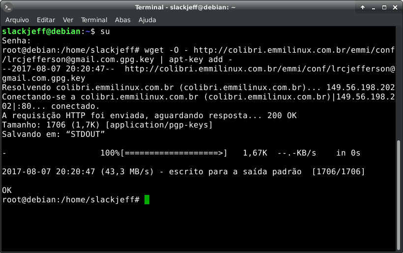
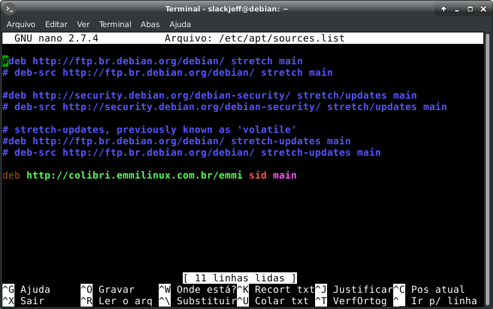

Adicionando repositório colibri na Emmi
Vamos adicionar o repositório oficial colibri na Emmi. Começamos abrindo o terminal, logando como root e baixando a chave pública.
# wget -O - http://colibri.emmilinux.com.br/emmi/conf/lrcjefferson@gmail.com.gpg.key | apt-key add -
Agora vamos adicionar o o link no sources.list Para isto vamos usar o nano ou de sua preferência.
# nano /etc/apt/sources.list
e adicionamos ao final:
deb http://colibri.emmilinux.com.br/emmi sid main
Salvamos e fechamos.
Agora rodamos:
# apt update
E pronto o repositório colibri está funcionando.